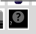

Mystery Part¶
Published on 2017-09-14 in Fritzing Tricks.
Sometimes you have some module or part that you want to use in your project, but since it’s just a one-off, you don’t feel like making a special footprint for it. You could just use pin headers for it, and that’s what I usually did, but there is a better way: a mystery part.
It looks like a black box with a question mark on it, and it’s basically a pin header with some extra options. What are the extras? Well, first of all, it has the first pin marked with a square — so that you know how to rotate your part. But more importantly, it has that “edit pin labels” button, which lets you assign names to all of the pins, so that when you hover over them with mouse, you can see what they are. This makes it much harder to make a mistake when connecting everything.
It also looks like a plain box in the schematic view, better than the anonymous headers. Of course you should give it a label describing what it actually is.